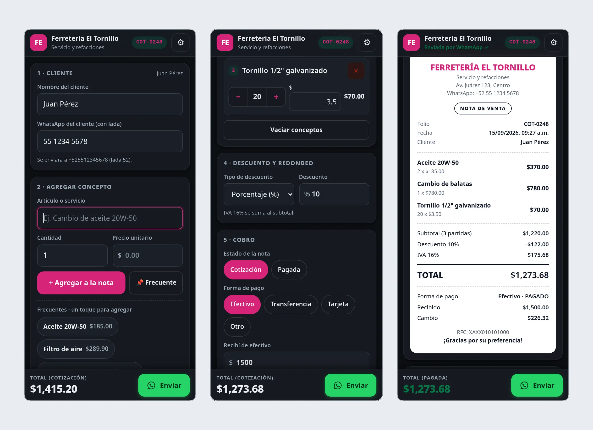
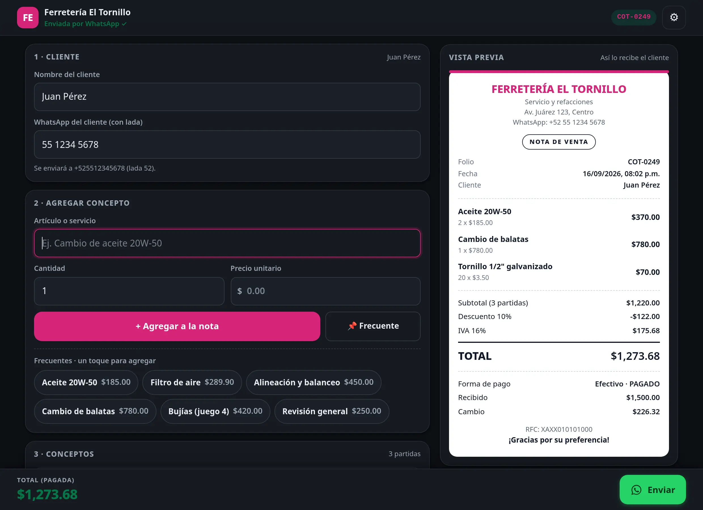
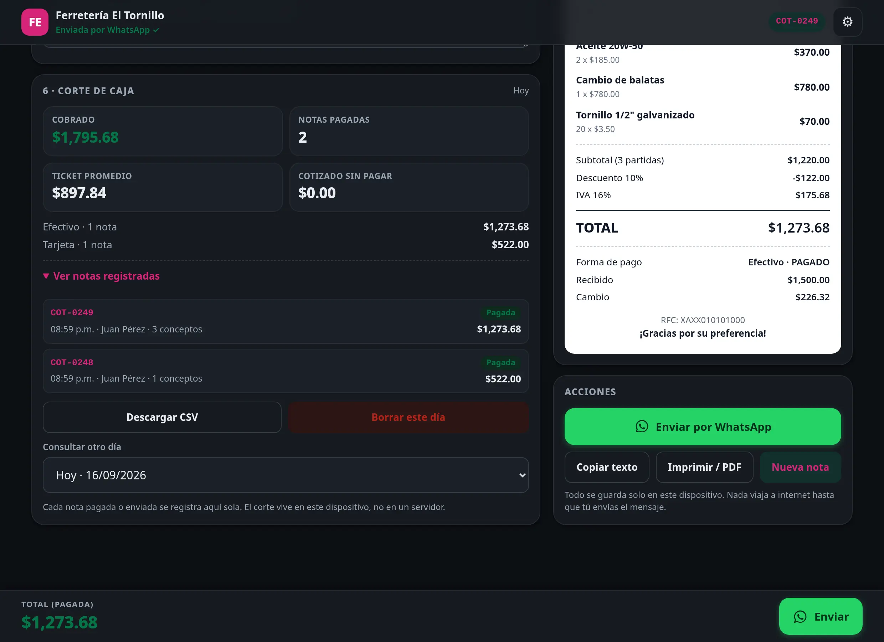

{kind=link}

{kind=link}

{kind=link}

Mostrador: cotizar y cobrar sin salir del trabajo
Ver el caso completo
- El problema
- Cotizar en el mostrador es sacar cuentas a mano, escribir la nota en el celular y volver a teclear los precios para mandarla. Y al cerrar el día nadie sabe cuánto se cobró ni de qué forma.
- Qué hice
- Un solo archivo que captura conceptos, calcula descuento e impuesto, arma el ticket y lo deja listo para enviar por WhatsApp. Trae corte de caja del día y también imprime en la impresora térmica de 80 mm del mostrador.
- Por qué así
- Se opera con una mano mientras se atiende. Todo el flujo cabe en una pantalla, el total nunca se pierde de vista y lo que más se vende se agrega con un toque. Corre en el teléfono o en la computadora, sin instalarse y sin internet.
Lo que hace hoy
- Capturar conceptos y cantidades: el foco vuelve solo al campo y la cantidad se repone
- Calcular descuento, impuesto, total y cambio, con la aritmética en centavos
- Armar la nota con folio, fecha, conceptos, impuesto, forma de pago y cambio
- Imprimir el ticket de 80 mm o guardarlo en PDF
- Llevar el corte del día: notas pagadas, lo cobrado, el promedio por nota y el desglose por forma de pago
- Exportar el corte a CSV para la contabilidad
- Mandar la nota al cliente por WhatsApp
- Respaldar y restaurar los datos desde un archivo, y trabajar sin internet
Ninguna de las dos piezas se vende tal cual. Esta enseña el flujo completo del mostrador funcionando; el sistema de un negocio se construye desde cero, con su catálogo, su respaldo y su forma de cobrar.
{kind=link}
{kind=link}